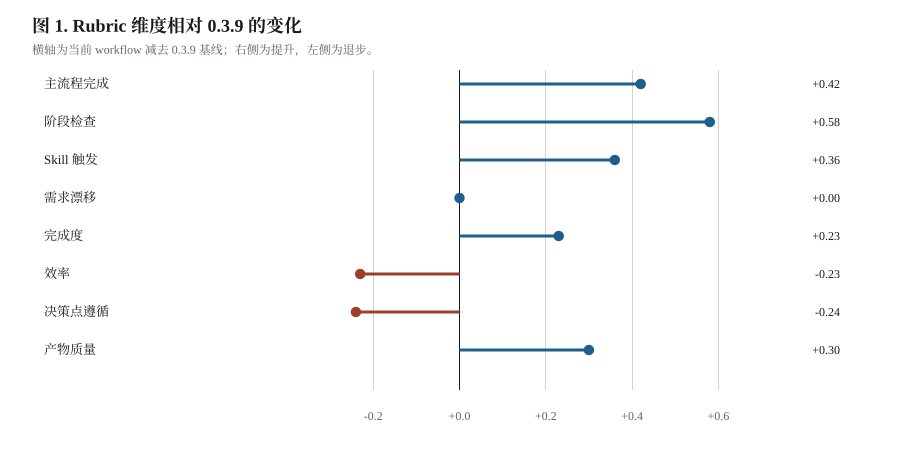
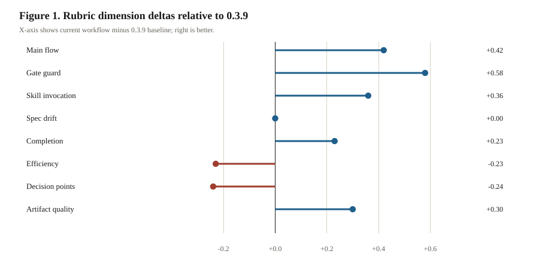

图 1. Rubric 维度相对 0.3.9 的变化
Figure 1. Rubric dimension deltas relative to 0.3.9
均值差，越靠右越好
Mean score difference, higher is better


Python 生成的 lollipop/forest plot 比手写 SVG 更接近论文图表：零线是 0.3.9
参考实现，蓝色代表当前 workflow 提升，红色代表退步。
The Python-generated lollipop/forest plot is closer to paper figures than hand-coded
SVG. The zero line is the 0.3.9 reference; blue favors the current workflow and red
marks regressions.
表 1. Per-task 对比摘要。Tokens 和成本为每个 task/treatment run 的观测总量。
Table 1. Per-task comparison summary. Tokens and costs are total observed usage for
each task/treatment run.
| 任务 |
Task |
Treatment |
状态 |
Status |
Checks |
Rubric |
Tokens |
Cost |
失败归因 |
Failure attribution |
| API 缓存 TTL |
API cache TTL |
COMET_FULL |
通过PASS
|
13/13 |
0.79 |
4,280,454 |
$2.6856 |
正常 |
OK |
| API 缓存 TTL |
API cache TTL |
COMET_FULL_039 |
失败FAIL
|
10/13 |
0.33 |
202,121 |
$0.1795 |
缺少 OpenSpec 产物和状态机证据 |
OpenSpec artifacts and state machine evidence missing |
| 修复 median |
Fix median |
COMET_FULL |
通过PASS
|
13/13 |
0.70 |
2,216,220 |
$1.4787 |
正常 |
OK |
| 修复 median |
Fix median |
COMET_FULL_039 |
失败FAIL
|
10/13 |
0.33 |
148,330 |
$0.1217 |
缺少 OpenSpec 产物和状态机证据 |
OpenSpec artifacts and state machine evidence missing |
| 完整流程 |
Full workflow |
COMET_FULL |
通过PASS
|
13/13 |
0.84 |
161,476 |
$0.0942 |
正常 |
OK |
| 完整流程 |
Full workflow |
COMET_FULL_039 |
通过PASS
|
13/13 |
0.88 |
224,163 |
$0.1309 |
正常 |
OK |
| 性能去重 |
Perf dedupe |
COMET_FULL |
通过PASS
|
13/13 |
0.79 |
3,042,862 |
$2.0644 |
正常 |
OK |
| 性能去重 |
Perf dedupe |
COMET_FULL_039 |
失败FAIL
|
10/13 |
0.34 |
49,682 |
$0.0280 |
缺少 OpenSpec 产物和状态机证据 |
OpenSpec artifacts and state machine evidence missing |
| 重构 counter |
Refactor counter |
COMET_FULL |
通过PASS
|
14/14 |
0.84 |
1,536,724 |
$1.0945 |
正常 |
OK |
| 重构 counter |
Refactor counter |
COMET_FULL_039 |
通过PASS
|
14/14 |
0.80 |
4,304,050 |
$3.0287 |
正常 |
OK |
| 健壮配置 |
Robust config |
COMET_FULL |
失败FAIL
|
10/13 |
0.33 |
208,867 |
$0.1774 |
缺少 OpenSpec 产物和状态机证据 |
OpenSpec artifacts and state machine evidence missing |
| 健壮配置 |
Robust config |
COMET_FULL_039 |
失败FAIL
|
12/13 |
0.56 |
621,935 |
$0.4801 |
workflow 阶段证据不完整 |
Workflow phase evidence incomplete |
方法
Methods
图表由 Python 生成，HTML 只负责报告排版
Charts are generated by Python; HTML owns report layout only
这个样板把数据可视化从 HTML 中拆出来：Python 脚本生成可复现 SVG，HTML
引用图表资产并提供中英文切换。后续真实 report renderer 可以继续复用这个边界。
This sample separates visualization from report layout: the Python script generates
reproducible SVG assets, while HTML references those figures and provides bilingual
switching.
- 中文内容是主版本；英文只作为同结构翻译。
-
Chinese is the source version; English is the same-structure translation.
- 图表文件位于
eval/local/report-style-demo-assets/。
-
Chart files live under
eval/local/report-style-demo-assets/.
- 当前没有多次 run 的方差，因此不画置信区间。
-
The current demo has no multi-run variance, so confidence intervals are not drawn.